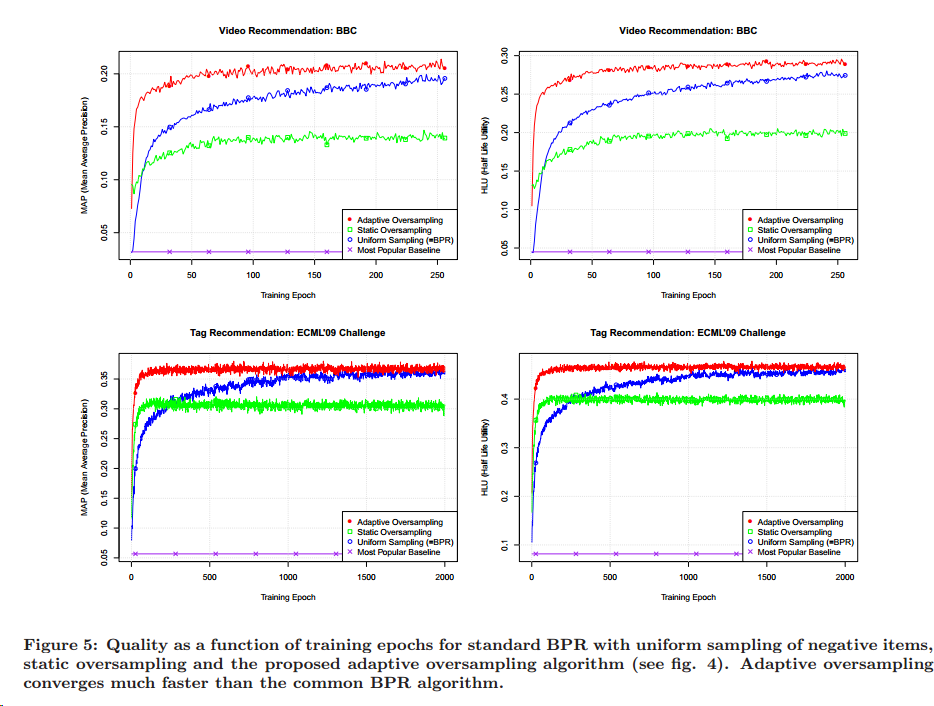

今天来总结一下BPR吧，也是近几年非常热门的一个算法，原因有三，简单的计算迭代方式，关注implicit feedback问题，同时关注rank loss而不是传统的mse等等。
BPR的基本介绍发现以前自己写过，那就不在这多废话了，大家可以点过去看，这里主要写一下作者BPR发表几年后的一篇改进，以及BPR存在的问题。
作者对于BPR的改进是14年的这盘文章
Rendle, Steffen, and Christoph Freudenthaler. "Improving pairwise learning for item recommendation from implicit feedback." Proceedings of the 7th ACM international conference on Web search and data mining. ACM, 2014.
作者在文中阐述了BPR存在的这样的问题：即经过少数的几次迭代后，热门与不热门的物品就可以明显地区分开了，但是之后的迭代中，产生的loss基本上就趋于0，因为之前迭代更新是用均匀采样，采出来负例样本，在商品呈长尾分布时，这样经过两三次迭代就可以区分出热门和非热门的商品，导致了后续迭代无用，且越热门的物品，出现次数越多，推荐给别人的概率也就越大（因为被迭代的次数多） 
同时，我们关心的商品推荐仅仅是前面top-n的商品，而且这n个商品的顺序准确度远远比后面商品顺序准确度要更值得被重视。
基于这样两个问题，作者提出通过采样的方式来解决，第一个就是根据热门商品来进行采样，称之为Static & Global Sampling，对未看过的流行的商品进行过采样，来削减流行商品的影响；第二个是Adaptive & Context-dependent Sampling，根据每一次迭代后商品的排序变化来进行采样。之后作者对这两种方法分别进行了对比试验，的确能提升系统的收敛速度。 
但是BPR的问题真的就这样完美的解决了吗？并没有，仍然存在很多问题： - 首先是采样的复杂度，按照作者提出的第二种采样方式，每经过一轮迭代，都需要进行大量的计算和排序，然后进行采样，这对于原本以精简、好用出名的BPR无非是带上了一层枷锁； - 其次是top-n商品的排序问题，比如说三个商品的排序ADBC分别排1234，实际中应该是ABCD排列，但存在这样的情况，我在迭代过程中，BD之间的差距需要拉大，计算之后变成了BACD，我们可以看见，B过分大了，D却又下降的刚刚好，所以这样迭代并不一定能排列出最优的rank组合，top-n商品的rank准确度较低，但作为产生候选集的算法来讲，的确是很优秀的。